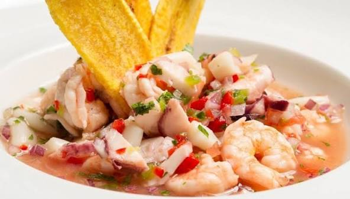

TUTORIAL CEVICHE DE CAMARONEs

Ingredientes Principales
- 2 libras (1 kg) de camarones medianos, pelados y desvenados
- 15 a 20 limones
- 1 o 2 naranjas (para el jugo)
- 3 cebollas coloradas (paiteñas), cortadas en rodajas muy finas
- 4 tomates maduros, picados en cubitos (puedes licuar uno para darle más cuerpo al jugo)
- 1 pimiento verde o rojo, picado en cubitos
- (opcional)1 cucharada de mostaza½ taza de salsa de tomate (ketchup)1 manojo de cilantro (culantro) finamente picadoAceite al gusto
Acompañamientos tradicionales
- Chifles (rodajas finas de plátano verde frito)
- PataconesMaíz tostadoCanguil (palomitas de maíz)Arroz blanco